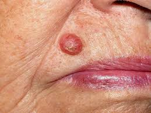
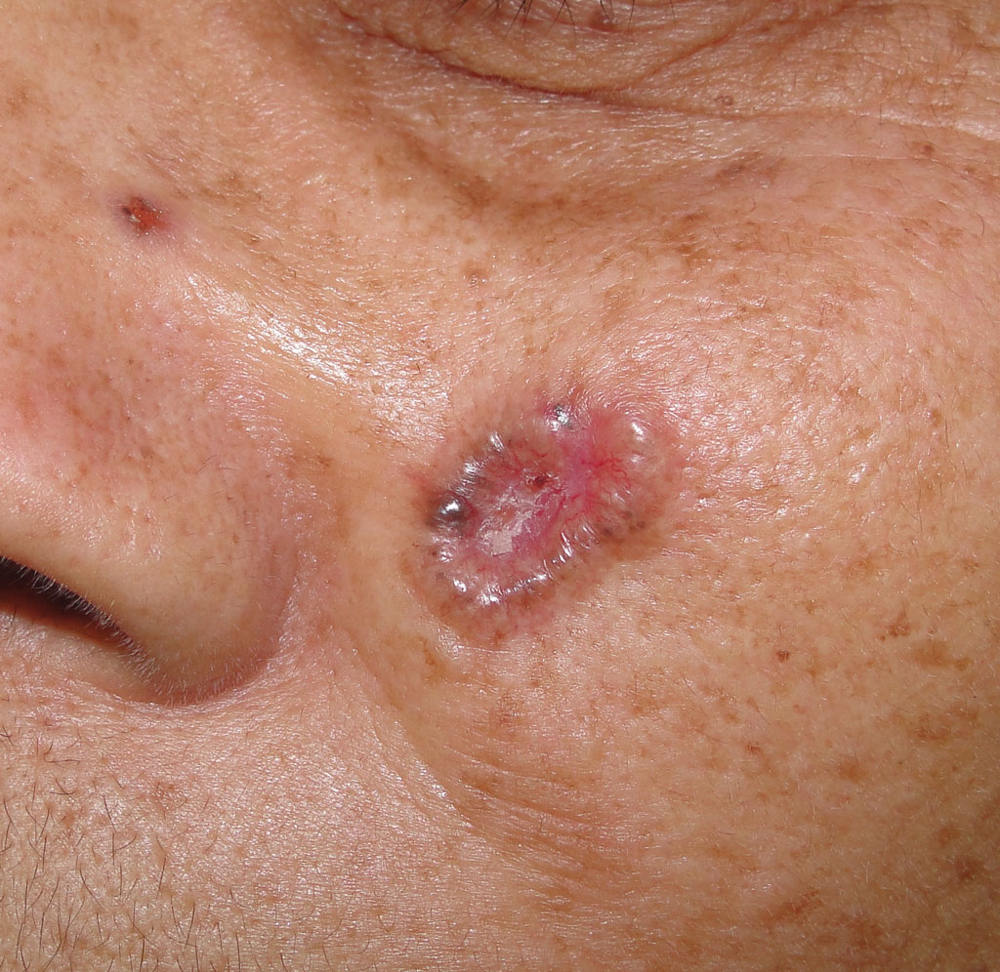

Lesões de Carcinoma Basocelular (CBC)
O que é?
Câncer de pele que surge nas células basais da epiderme. Costuma aparecer como um nódulo perolado que pode sangrar ou uma placa avermelhada, em áreas expostas ao sol, como rosto, orelhas, pescoço e couro cabeludo.
Por que tratar cedo?
Raramente se espalha, mas pode destruir os tecidos ao redor.
Tratamento
Geralmente, remoção cirúrgica. Em alguns casos, curetagem e eletrocoagulação.
Prevenção
Protetor solar, roupas de proteção e óculos de sol.